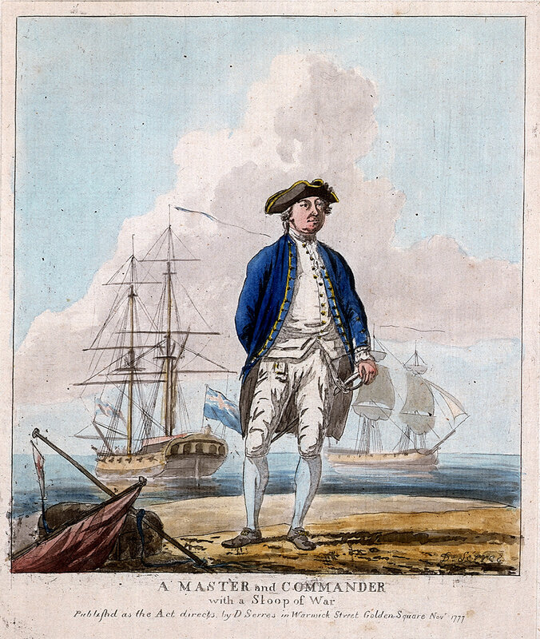

antoin попытаться разрешить его сомнения относительно носителя этого звания, ответчика в судебном процессе в далеком 1793 году. Но пока я чесал репу, появился обстоятельный пост на эту тему в журнале уважаемого george_rooke, что заставило меня задуматься о целесообразности исполнения своего намерения. После внимательного прочтения указанного поста я все же беру на себя смелость вновь поднять эту тему, так как здесь, мне кажется, осталось еще много интересного для моего читателя.
antoin попытаться разрешить его сомнения относительно носителя этого звания, ответчика в судебном процессе в далеком 1793 году. Но пока я чесал репу, появился обстоятельный пост на эту тему в журнале уважаемого george_rooke, что заставило меня задуматься о целесообразности исполнения своего намерения. После внимательного прочтения указанного поста я все же беру на себя смелость вновь поднять эту тему, так как здесь, мне кажется, осталось еще много интересного для моего читателя.
A Master and Commander with a Sloop of War.
Мастер-н-коммандер на фоне шлюпа. 1777 г.. National Maritime Museum, Гринвич, Лондон
Принятый у нас перевод термина Master and Commander как «командир и штурман» не совсем логичен, как правильно замечено у О’Брайана. Его можно сравнить с попыткой ввести вместо сàмого красивого звания на нашем флоте капитан-лейтенант его «перевод» капитан-и-заместитель капитана. Нелепо. Хотя с формальной точки зрения правильно. Мы не переводим такие звания и должности, как лейтенант (не «наместник» же, или «местоблюститель» писать, в самом деле), капитан, коммодор; когда же переводим «Post Captain» как «Капитан первого ранга», то делаем это совершенно напрасно ( об этом мы поговорим ниже). Кроме того, неправомочно и изменение порядка слов в переводе: командир и штурман вместо штурман и командир. Мы покажем дальше, что в английском флоте существовал не только Master and Commander, но и Commander and Master.
Не знаю те мотивы, которыми руководствовался О’Брайан, когда, относя события своего первого романа к 1800-му году, произвел своего героя в master and commander. Вот текст Order-in-Council ("Королевский указ в совете", который вводится по рекомендации Тайного совета и не требует рассмотрения в парламенте g._g.) от 27 марта 1746 года (вышедший, заметим, более чем за полвека до рассматриваемых нами событий)
(Далее мы будем приводить достаточно длинные цитаты, но нам ведь некуда торопиться, не правда ли? Впереди у нас целая вечность)
At the Court of St. James's the 27th Day of March 1746
Present
The King's most Excellent Majesty in Council
Whereas the Lords Commissioners of the Admiralty have, by their Memorial to His Majesty at this Board represented, That His Majesty's Sloops of War being of larger dimensions and carrying more Men and Guns than they did formerly, and the Service often requiring their going among the Sands and Shoals either in chase of the enemy, or on other accounts where the skill of Pilotage is necessary, and the Establishment not allowing them Masters but only an Officer called Second Master who serves in lieu of a Mate with not sufficient Pay or encouragement for Men of abilities necessary for such a charge, nor authority to support them in the execution of it; The said Lords Commissioners had therefore thought it proper to lay before His Majesty the following proposals for His Majesty's Royal Approbation,
Vizt:
1st. That all His Majesty's Sloops of War be allowed Masters who have passed their examination before the Corporation of Trinity House of Deptford Strond, and are certified to be qualified for that office.
2nd. That as the Commissions granted to those who command His Majesty's Sloops of War do give them the Title of Masters and Commanders of the said Sloops, the word Master be omitted, and that they be styled Commanders only.
3rd. That Masters of Sloops of War be allowed the Wages and Privileges of Masters of a Sixth Rate.
4th. That Masters of Sloops of War do share in prizes as Masters.
And whereas the Lords of the Committee of Council to whom His Majesty referred the consideration of the said Memorial and proposals, have this day reported to His Majesty at this Board, that they had considered thereof, and were of opinion that the said several proposals were proper to be approved, His Majesty is thereupon pleased, with the advice of His Privy Council to declare His Royal Approbation of the aforesaid proposals, and to order as it is hereby ordered, that the Lords Commissioners of the Admiralty do cause the same to be carried into execution.
Не буду приводить буквальный перевод текста Указа, чтобы, не дай бог, не исказить мысль его величества короля, отмечу лишь некоторые интересующие нас детали:
Военные шлюпы флота его величества за последнее время значительно увеличились в своих размерах, выросло число находящихся на них пушек и численный состав их экипажей. Перед ними ставятся более сложные задачи, требующие маневрирования среди отмелей и в прибрежном мелководье при преследовании кораблей противника и в других случаях, где необходимо высокое искусство навигаторов. Действующее Установление не допускает наличия на на этих кораблях должности Штурмана, а ограничивает штат лишь офицером в ранге Второго штурмана, который исполняет обязанности Помощника с недостаточным жалованьем и невысоким авторитетом среди остальных членов команды. Лорды Адмиралтейства внесли его величеству на одобрение следующие предложения:
1. Ввести на всех военых шлюпах должность Штурмана, который должен сдать соответствующие экзамены в Тринити Хаус (Corporation of Trinity House of Deptford Strond - официальная организация, отвечающая за навигацию в Англии, учрежденная еще Генрихом VIII в 1514 году g._g.) и получить соответствующий сертификат.
2. Учитывая, что лица, ранее назначенные командовать шлюпами его величества, производились Адмиралтейством в Masters and Commanders указанных шлюпов, отныне слово Master в этом титуле должно быть опущено, так что поименованные командиры отныне только Commanders.
3. Штурманам шлюпов назначается жалованье и привилегии, предусматренные Штурману корабля шестого ранга.
4. Доля Штурмана шлюпа в призовых деньгах Устанавливается равной доле Штурмана.
Далее следовала фраза, вводящая указ в действие.
Таким образом, после 27 марта 1746 года в военном флоте Англии производство в Мастер-н-коммандеры прекратилось.
Получается, что О’Брайан ошибся и ввел в заблуждение нас?
Не будем столь категоричны. Автор романа приводит текст приказа о назначении Джона Обри командиром шлюпа «Софи». (Приведем его и мы в переводе В. Кузнецова):
«От достопочтенного лорда Кейта, рыцаря Ордена Бани, Адмирала синего вымпела и Верховного Главнокомандующего судов и кораблей Его Величества, как используемых, так и тех, что будут использоваться на Средиземном море и т. д. и т. п.
В связи с тем что капитан Сэмюэл Аллен, командир шлюпа Его Величества «Софи», переводится на «Паллас» по причине кончины капитана Джеймса Брэдби, настоящим вам надлежит проследовать на борт «Софи» и принять на себя обязанности по командованию ею, требуя от всех офицеров и экипажа указанного шлюпа выполнять свои обязанности со всем послушанием и почтением к вам, как их командиру; вам также надлежит исполнять опубликованные регламенты, а также приказы и указания, которые вы можете время от времени получать от любого из ваших начальников, состоящих на службе Его Величества. Отсюда следует, что ни вы, ни кто-либо из ваших подчиненных не вправе уклониться от своих обязанностей под страхом наказания.
Сей приказ исполнить без промедления.
Дан на борту «Фудруаяна»
в открытом море, 1 апреля 1800 года».
«Джону Обри, эсквайру,
настоящим назначенному командиром шлюпа Его Величества «Софи»
согласно распоряжению адмирала Томаса Уокера»
Мы не будем приводить тот же текст в подлиннике, отметим лишь что фраза из перевода «проследовать на борт «Софи» и принять на себя обязанности по командованию ею» в оригинале выглядит так: to proceed on board the Sophie and take upon you the Charge and Command of Commander of her – так что Обри получает пост Commander, а не master and commander, как можно было бы ожидать, вспомнив название романа. То же самое мы можем сказать и относительно адреса вновь произведенного Коммандера, приведенного в письме:
To John Aubrey, Esqr, hereby appointed Commander of His Majesty' s Sloop Sophie By command of the Admiral Thomas Walker.
Таким образом, формально королевский указ от 1746 года не нарушен. Тем не менее Джек Обри в дальнейшем тексте романа неоднократно упоминается как мастер-н-коммандер, и лишь иногда – просто коммандер.
Мы не знаем, была ли это ошибка О’Брайана, или он знал такие тонкости в именовании флотских должностей в начале девятнадцатого века, о которых мы и не догадываемся. В качестве оправдания для автора следует отметить, что процитированный нами указ короля не вошел в действие немедленно, как предписывалось в его тексте. Записи в книгах производства в офицеры и уоррент-офицеры (Commission and Warrant books) дают нам тому примеры. Так, 21 апреля 1746 года некто John Byron был произведен в "Master and Commander of the Vulture sloop», хотя уже 3 июля Hugh Pallisser стал " Commander " шлюпа Weazle. Отмечаются и другие производства в "Masters and Commanders", но все они производились на корабли, меньшие чем шлюпы (брандеры, мобилизованные для военной службы корабли торгового флота, канонерки и яхты).
К рассмотрению вопроса по существу – когда, как и почему появилась на английском флоте должность master and commander, когда она вышла из употребления, – приступим в следующий раз.